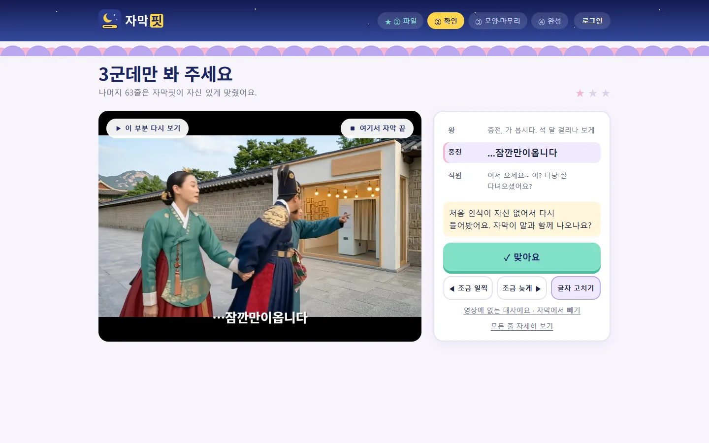
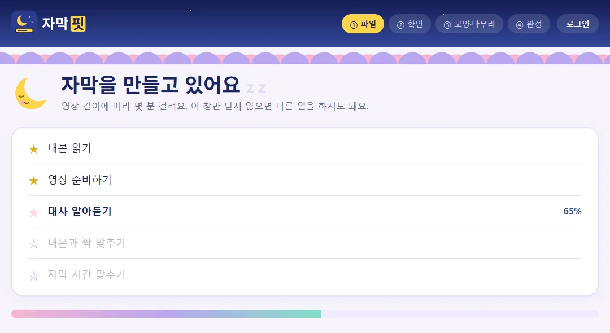
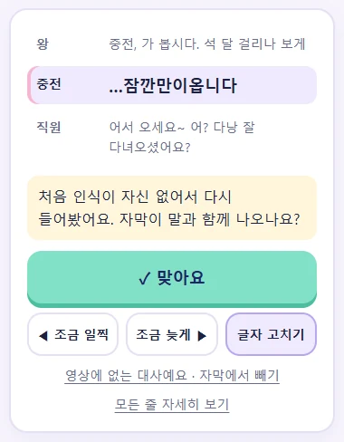

무료 시험판 0.9Windows용
대본 그대로, 말소리에 맞춘 자막
대본 PDF와 완성 영상을 넣으면 대본의 대사를 그대로 자막으로 쓰고, 말하는 시간에 맞춥니다. 시간이 애매한 줄만 따로 표시합니다.
- 영상은 PC에서만 처리
- 회원가입 없이 사용
- 자동 업데이트

자막핏이 하는 일
자막 문구는 대본에서
대본 PDF에서 대사만 골라 자막 문구로 씁니다. 한 줄씩 치거나 붙여 넣지 않아도 됩니다.
시간은 말소리에 맞춰
영상에서 들리는 말을 대본과 맞춰 보고, 대사가 시작하고 끝나는 때에 자막을 놓습니다.
인터뷰 쇼츠 만들기
인터뷰 대본과 장면 클립을 넣으면 질문 자막, 구역 카드, 시작·마무리 화면을 넣어 세로 쇼츠로 만듭니다.
사용 순서
파일 두 개를 넣고 기다린 뒤, 표시된 몇 줄만 확인하면 됩니다.
-
대본과 영상 넣기
'새 영상에 자막 달기'를 누르고 대본 PDF와 자막 없는 완성 영상을 고릅니다. 원본 파일은 바꾸지 않습니다.
-

대사 알아듣고 시간 맞추기
자동으로 진행되니 기다리면 됩니다. 4분 영상이 NVIDIA 그래픽카드 PC에서 약 20초, 그래픽카드 없이 CPU로는 약 1분 걸렸습니다(8코어 데스크톱 CPU 기준).
-
표시된 줄만 확인
시간이 애매한 줄만 따로 표시됩니다. 그 부분을 재생해 보고, 맞으면 '맞아요'를 누르고 어긋나면 '조금 일찍'·'조금 늦게'로 옮깁니다.
-
영상으로 내보내기
자막 모양 4가지 중 하나를 고르고, 필요하면 인트로·아웃트로·페이드를 넣어 영상(MP4)으로 내보냅니다. 다른 편집 프로그램에서 이어서 고치려면 자막 파일(SRT)로 내보냅니다.
실제 작업 기록
악동꼬마 채널 《조선에 출동했습니다》 작업에서 잰 값입니다. PC 사양과 영상에 따라 달라집니다.
- 약 20초자막 초안이 나오기까지
4분 안팎 영상, NVIDIA 그래픽카드 PC에서 5회 측정(12~24초)
- 66줄 중 3줄직접 확인한 줄
시즌2 10편 기준. 시즌2 4편은 55줄 중 5줄, 인터뷰 쇼츠는 13줄 중 0줄
- 약 2분 15초인트로·아웃트로를 넣은 영상 완성까지
시즌2 10편 작업 1회 기록. 이전에 CapCut으로 자막을 붙여 넣을 때는 50분~1시간 걸렸습니다(제작자 기억, 측정값 아님)
기능
확인이 필요한 줄만 따로
들린 말과 대본을 맞출 때 확실하지 않았던 줄만 모아 보여 줍니다. 시즌2 10편은 66줄 중 3줄이었습니다.
- 맞아요 · 조금 일찍 · 조금 늦게
- 그 부분을 다시 재생해 보고 시간을 확정하거나 앞뒤로 옮깁니다.
- 글자 고치기 · 들린 대로 쓰기
- 배우가 대본과 다르게 말한 줄은 자막 문구를 바꿀 수 있습니다.
- 자막에서 빼기
- 편집에서 잘린 대사는 자막에서 뺍니다.
- 모든 줄 자세히 보기
- 표시되지 않은 줄도 전체 목록에서 열어 고칠 수 있습니다.

자막 모양과 마무리
자막 모양 4가지(테두리, 그림자, 굵은 글꼴, 테두리+그림자)를 실제 장면에 미리 그려 놓고 눈으로 비교해 고릅니다. 글꼴은 본고딕(Noto Sans KR)입니다.
- 인트로·아웃트로
- 가지고 있는 인트로·아웃트로 영상을 등록하면 앞뒤에 붙입니다.
- 페이드
- 본편 시작과 끝이 1초 동안 서서히 밝아지고 어두워집니다.
- 장면 안내
- 대본에 적힌 '오후' 같은 시간·장소 안내를 화면에 넣습니다.
- 다른 화질로 바꾸기
- 자막을 맞춘 뒤 같은 영상의 다른 화질 파일(예: 4K)로 바꿔 내보낼 수 있습니다.
클립으로 인터뷰 쇼츠
인터뷰 대본 PDF와 인물별 장면 클립(짧은 영상 파일)을 넣으면 1080×1920 세로 쇼츠로 만듭니다. 편집 프로그램이 없어도 됩니다.
- 클립 놓기
- 대본에서 구역(질문을 받는 사람)을 찾고, 파일 이름으로 클립을 구역에 놓습니다. 틀리면 끌어서 옮깁니다.
- 질문 자막·구역 카드
- 질문은 자막으로 넣고, 구역이 바뀔 때는 '#1: 그날 트레이너의 속마음' 같은 카드를 넣습니다.
- 앞 화면·끝 화면
- 제목과 끝 문구는 대본에서 가져오며 직접 고칠 수 있습니다.
- 배경음악
- 가지고 있는 음악 파일을 깔 수 있습니다.
영상 파일과 자막 파일
자막을 입힌 영상(MP4)이나 자막 파일(SRT)로 내보냅니다.
- 영상(MP4)
- H.264 형식 영상입니다. NVIDIA 그래픽카드가 있으면 그래픽카드로 영상을 만듭니다(인코딩).
- 자막 파일(SRT)
- 다른 편집 프로그램에서 자막을 이어서 고칠 때 씁니다.
- 자막이 이미 들어간 영상
- 새 자막을 입히지 않고 자막 파일(SRT)만 내보냅니다.
- 가지고 있는 자막 파일 넣기
- 다른 곳에서 만든 자막 파일(SRT)을 영상에 입힐 수도 있습니다. 첫 화면 아래 링크에서 시작합니다.
영상과 소리를 처리하는 곳
도구마다 영상과 소리를 처리하는 곳이 다릅니다. 각 회사 공식 안내에서 확인한 내용만 적었습니다.
| 도구 | 처리하는 곳 | 출처 |
|---|---|---|
| 자막핏 (PC에 설치) | 사용자 PC인터넷은 인식 모델·그래픽카드 부품 첫 내려받기, 업데이트 확인, 로그인, 동의한 사용 통계에만 씁니다. | 개인정보 처리방침 |
| 자막핏 (사이트에서) | 운영자 PC올린 대본과 영상은 작업을 만든 날부터 7일 뒤 삭제 | 개인정보 처리방침 |
| CapCut 자동 캡션 | 클라우드 | CapCut 도움말 |
| Vrew | 서버음성만 전송, 영상은 전송하지 않으며 1시간 이내 삭제한다고 안내 | Vrew 도움말 |
| YouTube 자동 자막 | YouTube 서버영상 업로드 필요 | YouTube 고객센터 |
| Premiere Pro 음성-텍스트 | 사용자 PC언어 팩 설치 시 오프라인 | Adobe 안내 |
2026년 10월 19일 각 회사 공식 안내 기준이며 바뀔 수 있습니다. 각 상표는 해당 소유자의 것이며 자막핏과 관계없습니다.
개인정보와 안전
PC에 설치해 쓰면 대사 알아듣기와 자막 입히기를 모두 사용자 PC에서 하고, 인터넷은 아래 경우에만 씁니다. 사이트에서 쓰는 경우는 자주 묻는 질문에 적었습니다.
영상·대본·자막은 보내지 않음
작업 파일은 PC의 작업 폴더에만 저장됩니다.
처음 실행할 때 내려받기
대사를 알아듣는 데 쓰는 인식 모델(약 1.6GB)을 받습니다. NVIDIA 그래픽카드가 있으면 그래픽카드 부품(약 1.4GB)도 받습니다.
전자 서명이 맞는 새 판만 적용
실행할 때 새 판이 있는지 확인합니다. 전자 서명이 맞는 파일만 적용하고, 새 판이 켜지지 않으면 이전 판으로 되돌립니다.
사용 통계는 동의한 경우만
2026년 10월 27일부터, 동의한 경우에만 하루 단위로 만든 작업 수·완성 영상 수와 오류 종류를 보냅니다. 대사·파일 이름·영상은 보내지 않습니다.
로그인은 선택
계정 없이 모든 기능을 쓸 수 있습니다.
원본 파일은 바꾸지 않음
대본과 영상 원본은 읽기만 하고, 결과물은 따로 저장합니다.
자세한 내용은 개인정보 처리방침에 있습니다.
설치
필요한 것
- 운영체제
- Windows 10 이상 64비트 (지금까지 Windows 11에서 확인)
- 그래픽카드
- NVIDIA 권장. 없으면 CPU로 대사를 알아듣습니다. 4분 영상이 AMD Ryzen 7 9700X(8코어 데스크톱)에서 약 1분 걸렸습니다(1회 측정). CPU가 느린 PC는 더 걸립니다.
- 저장 공간
- 약 2GB, NVIDIA 그래픽카드 PC는 약 4GB. 작업마다 완성 영상 크기만큼 더 필요합니다.
- 대본
- 글자를 선택할 수 있는 PDF. 스캔한 이미지 PDF는 읽지 못합니다.
- 영상
- MP4·MOV·MKV·M4V
설치 순서
- 설치 파일을 받습니다(약 108MB).
- 'Windows의 PC 보호' 창이 뜨면 '추가 정보'를 누르고 '실행'을 누릅니다. 아직 코드 서명 인증서가 없어서 뜨는 창입니다.
- 처음 실행하면 인식 모델(약 1.6GB)을 내려받습니다. NVIDIA 그래픽카드가 있으면 그래픽카드 부품(약 1.4GB)도 받습니다. 인터넷 속도에 따라 몇 분 걸릴 수 있습니다.
- 지울 때는 Windows 설정 → 앱에서 자막핏을 찾아 '제거'를 누릅니다. 만든 작업까지 지울지 묻고, 기본은 남겨 둡니다.
알아 둘 점
- 시험판(0.9)입니다. 지금까지 Windows 11 PC 한 대에서 확인했습니다.
- Windows 전용이며, 한국어 대본과 영상을 기준으로 만들었습니다.
- 자막 시간과 장면 구분은 말소리를 알아들어 정한 것입니다. 표시된 줄은 확인이 필요합니다.
자주 묻는 질문
다른 질문은 gunyoon0322@naver.com으로 보내 주세요.
편집 프로그램을 처음 써도 쓸 수 있나요?
네, 처음 쓰는 분을 생각하고 만들었습니다. 대본과 영상을 넣으면 자막 문구와 시간은 자막핏이 먼저 맞춰 둡니다. 직접 볼 곳은 시간이 애매하다고 표시된 줄뿐이고, 시즌2 10편에서는 66줄 중 3줄이었습니다. 자막 모양도 말로 고르지 않고, 실제 장면에 미리 그려 둔 4가지를 눈으로 보고 고릅니다.
무료인가요?
지금 시험판(0.9)은 모든 기능을 무료로 쓸 수 있습니다. 완성 영상에 워터마크나 광고도 붙지 않습니다.
Mac이나 휴대폰에서도 쓸 수 있나요?
PC에 설치하는 자막핏은 Windows 전용입니다. Mac이나 휴대폰에서는 사이트에 로그인해 브라우저로 쓸 수 있습니다. 휴대폰 화면 폭에 맞춰 두었고, Mac에서는 아직 직접 시험해 보지 못했습니다.
어떤 대본 파일을 넣나요?
글자를 마우스로 끌어 고를 수 있는 PDF를 넣습니다. 자막핏은 PDF 안의 글자를 읽어 대사만 골라 쓰기 때문에, 종이를 스캔해 사진처럼 만든 PDF는 읽지 못합니다. 한글이나 워드로 쓴 대본이라면 'PDF로 저장'해서 넣으면 됩니다. 대본에서 대사를 하나도 찾지 못하면 시작하기 전에 멈추고 알려 드립니다.
대본이 없으면 쓸 수 없나요?
자막 문구를 대본에서 가져오는 방식이라 대본이 있어야 합니다. 이미 만들어 둔 자막 파일(SRT)이 있다면 첫 화면 아래 '다른 곳에서 만든 자막 파일을 영상에 넣기'로 자막핏 모양을 입혀 영상으로 만들 수 있습니다.
어떤 영상을 넣나요?
편집을 모두 마치고 자막만 넣기 전인 완성 영상(MP4·MOV·MKV·M4V)을 넣습니다. 편집이 끝난 영상이어야 대사 시간이 맞습니다. 자막이 이미 들어간 영상이라면 넣을 때 '네, 들어 있어요'를 고르세요. 그 위에 자막을 또 입히지 않고 자막 파일(SRT)만 만듭니다. 소리가 없는 영상은 대사를 들을 수 없어서 시작하기 전에 알려 드립니다.
대본과 다르게 말한 대사는 어떻게 되나요?
대본 글과 실제로 들린 말이 많이 다르면 그 줄을 따로 표시합니다. 확인 화면에서 '들린 대로 쓰기'를 누르면 들린 말로, '글자 고치기'를 누르면 원하는 글로 바꿉니다. 편집하며 잘려서 영상에 없는 대사는 '자막에서 빼기'로 뺍니다.
그래픽카드가 없어도 되나요?
됩니다. 그래픽카드가 없으면 CPU로 대사를 알아듣고, 시간이 더 걸립니다. 4분 영상이 NVIDIA 그래픽카드 PC에서는 약 20초, 8코어 데스크톱 CPU(AMD Ryzen 7 9700X)에서는 약 1분 걸렸습니다. 노트북처럼 CPU가 느린 PC는 더 걸립니다. 같은 편으로 한 번 비교해 보니 자막 결과는 거의 같았고, 완성 영상 파일은 Windows 기본 방식으로 만들어 약 1.2배 컸습니다.
처음 실행할 때 왜 오래 걸리나요?
처음 한 번만 대사를 알아듣는 데 필요한 파일(약 1.6GB)을 내려받기 때문입니다. NVIDIA 그래픽카드가 있으면 그래픽카드용 부품(약 1.4GB)도 함께 받습니다. 인터넷 속도에 따라 몇 분 걸리고, 다음부터는 바로 시작합니다.
설치할 때 'Windows의 PC 보호' 창이 떠요.
아직 코드 서명 인증서가 없어서 뜨는 창입니다. '추가 정보'를 누른 뒤 '실행'을 누르면 설치가 이어집니다. 설치 파일은 이 사이트의 단추나 GitHub 공식 배포 페이지(kkoma1212/jamakfit-updates)에서만 받아 주세요.
설치하지 않고 사이트에서 쓸 수 있나요?
회원으로 로그인하면 사이트에서 바로 쓸 수 있습니다. 대신 올린 대본과 영상은 운영자 PC의 그래픽카드(RTX 3060) 한 대가 차례로 처리해서, 사람이 몰리거나 영상이 길면 기다릴 수 있습니다. 회원마다 하루 3편, 한 편에 20분까지 쓸 수 있고, 올린 파일은 작업을 만든 날부터 7일 뒤 지웁니다. 자주 쓰거나 영상이 길다면 PC에 설치해 쓰는 쪽이 빠릅니다.
영상이 인터넷으로 올라가나요?
PC에 설치해 쓰면 올라가지 않습니다. 대사를 알아듣는 일과 자막을 입히는 일을 모두 그 PC 안에서 합니다. 인터넷은 처음 내려받기, 새 판 확인, 로그인, 그리고 동의한 경우의 사용 통계에만 씁니다(위 '개인정보와 안전'). 사이트에서 쓰면 대본과 영상이 운영자 PC로 올라가고, 7일 뒤 지워집니다.
로그인해야 하나요?
PC에 설치해 쓰면 로그인하지 않아도 모든 기능을 쓸 수 있습니다. 사이트에서 쓰려면 회원 가입과 로그인이 필요합니다. 비밀번호를 잊었다면 로그인 화면의 '비밀번호를 잊었나요?'에서 메일로 받은 번호로 새로 정할 수 있습니다.
CapCut 같은 다른 프로그램에서 이어서 고칠 수 있나요?
네. 완성 화면의 'CapCut에서 더 고치려면 자막 파일만 받기'로 자막 파일(SRT)을 받아 불러오면 됩니다. CapCut PC에서는 '캡션 → 캡션 추가 → 파일 가져오기'(버전에 따라 '텍스트 → 로컬 캡션')로 불러옵니다. 자막 시간은 그대로 들어가고, 글꼴과 모양은 그 프로그램에서 다시 고릅니다.
본편을 잘라 쇼츠로 만들 수 있나요?
아직은 안 됩니다. 쇼츠는 인터뷰 대본과 인물별 장면 클립을 넣어 만드는 인터뷰 쇼츠만 됩니다. 질문 자막과 구역 카드, 앞뒤 화면까지 넣어 세로 영상(1080×1920)으로 만듭니다.
새 판은 어떻게 받나요?
따로 할 일은 없습니다. 자막핏을 켤 때 새 판이 있는지 확인해 받아 두고, 다음에 켤 때 바뀝니다. 전자 서명이 맞는 파일만 쓰고, 새 판이 제대로 켜지지 않으면 이전 판으로 돌아갑니다. 만들어 둔 작업은 그대로입니다. 드물게 큰 변경이 있을 때는 새 설치 파일을 받으라는 안내가 뜹니다.
지우려면 어떻게 하나요?
Windows 설정 → 앱에서 자막핏을 찾아 '제거'를 누릅니다. 만든 작업까지 지울지 묻고, 기본은 남겨 둡니다.